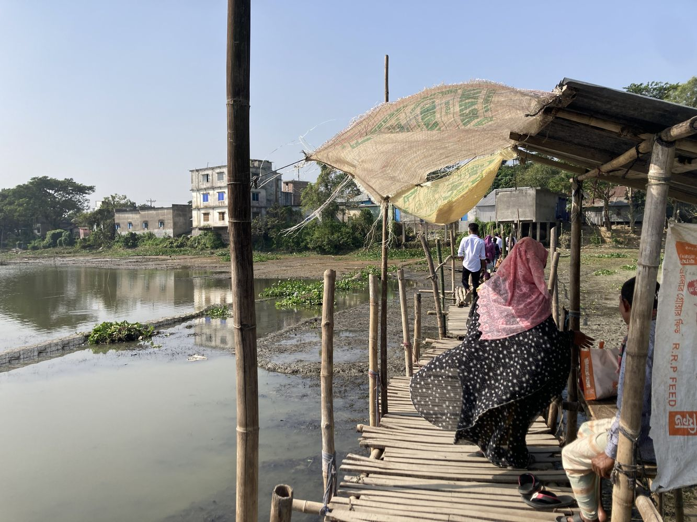
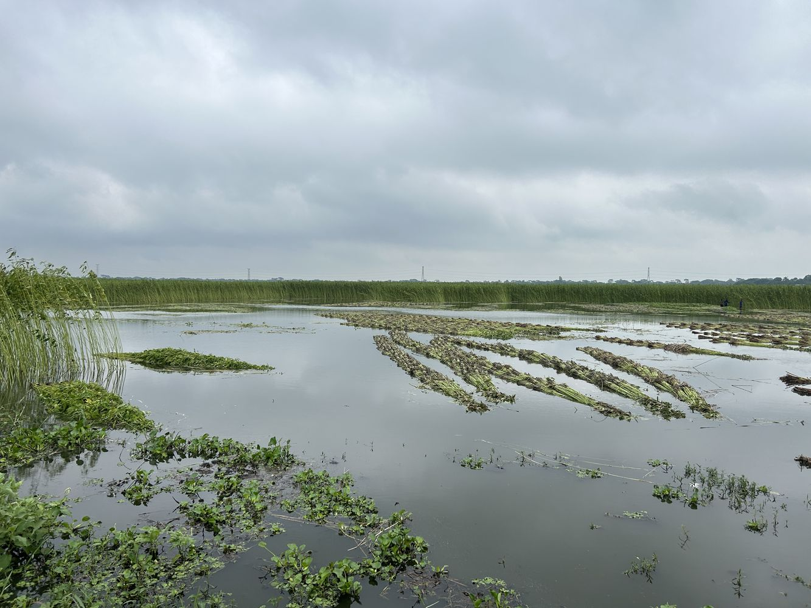
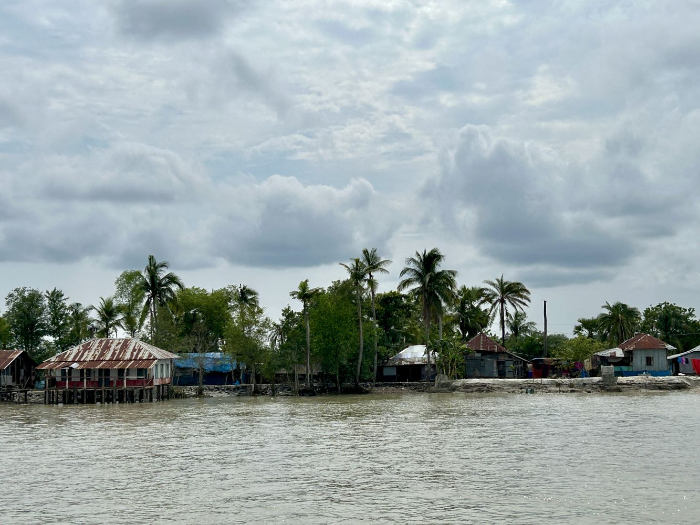
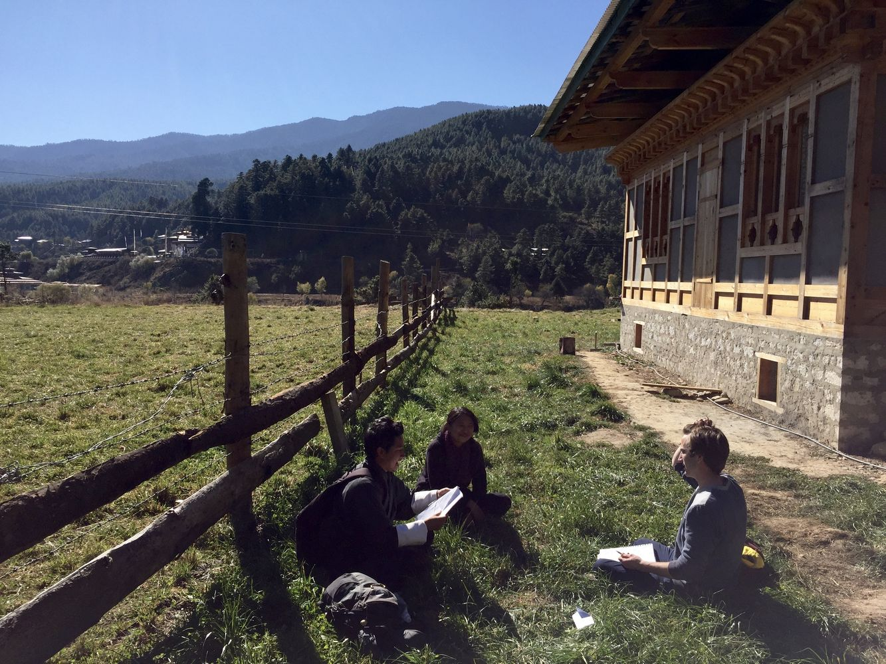
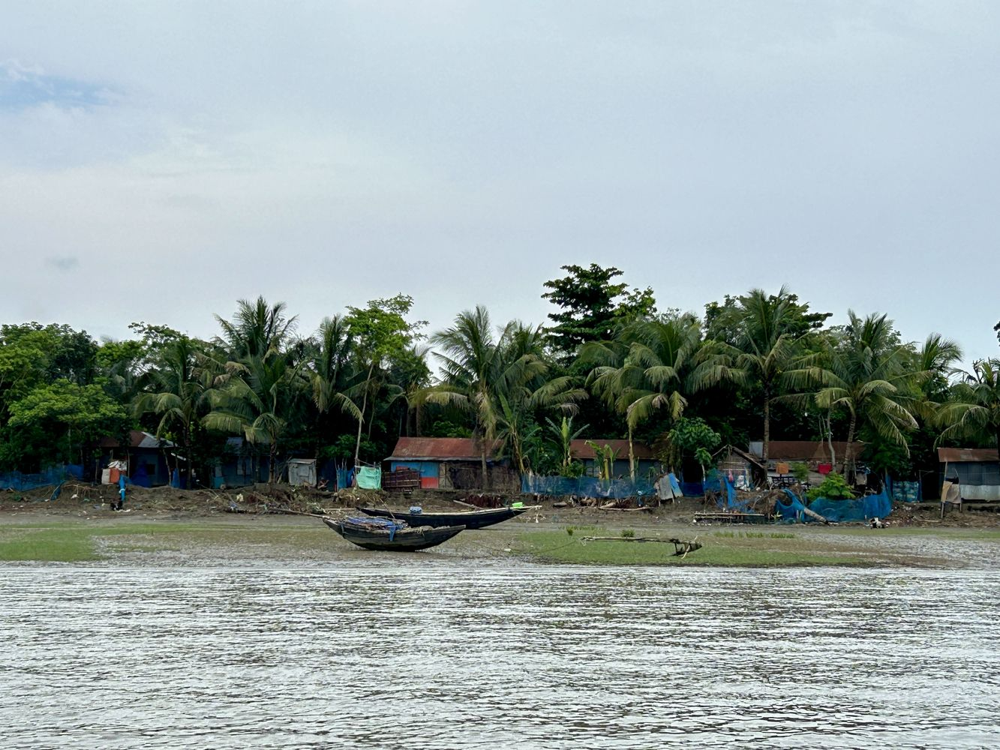
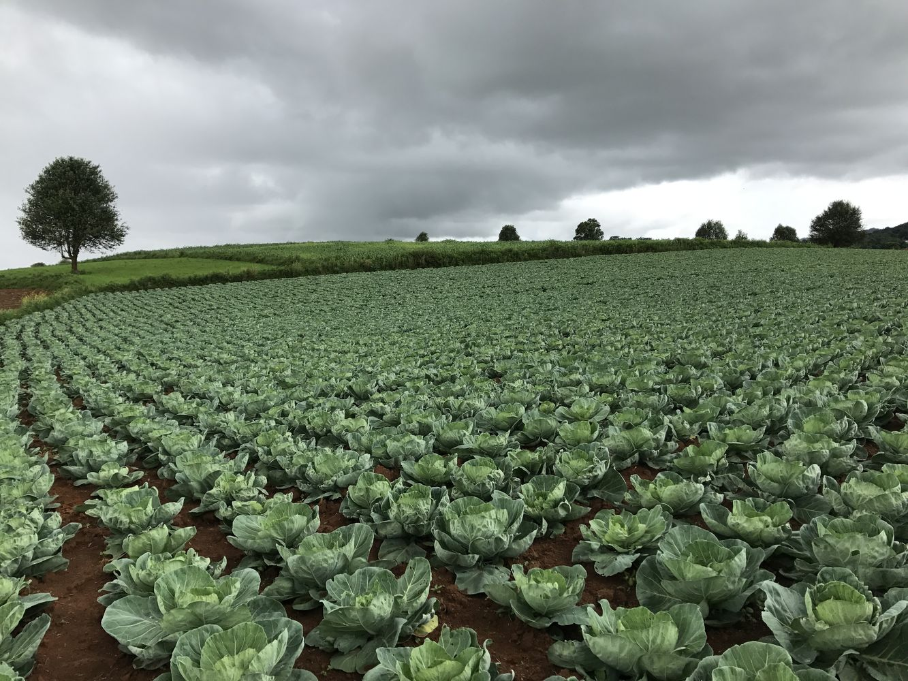

About
I am an environmental demographer and a NIH T32-funded postdoctoral fellow at the Carolina Population Center at UNC Chapel Hill.
My research examines intersections of migration, population health, environmental change, and rurality using interdisciplinary methods. My work spans geographic contexts and demographic inquiries, from investigating women’s migration and post-COVID well-being in Bangladesh to analyzing disaster impacts and rural health vulnerabilities in the United States. I am most interested in work that uses detailed data about people’s lives to understand and complicate large, complex demographic trends.
I contribute methodological expertise in research design, data integration, and advanced analysis to multidisciplinary, multi-university collaborations. I excel at synthesizing complex spatial-temporal data from diverse sources to address pressing social and environmental changes.
Originally from the mountains of rural Tennessee, I hold a BA in International Affairs from the George Washington University and an MS and PhD in Environmental Studies from the University of Colorado Boulder. Before graduate school, I worked for international development and non-profit organizations in Myanmar, Puerto Rico, and Washington, D.C.



Research
How can quantitative demographic methodologies illuminate complexity in the ways populations respond to socioenvironmental change?
For whom and under what conditions is migration an adaptive response to climate change?
Each row is a project. Filled columns mark the domains it works in.
-
Extreme weather and household migration in the United States
Linking disaster data and hazard maps to Census address records inside the Federal Statistical Research Data Center to measure how household moves respond to exposure at national scale.
-
In development
Dataset in preparation
migration environment population health rurality -
In development
-
Migration, health, and flooding across the Global South
Examining global patterns of women’s health and mobility in the context of flooding, pairing Demographic and Health Survey data with high-resolution flood maps.

Flooded cropland -
In progress
Women’s well-being, migration, and flooding in the Global South
migrationenvironmentpopulation health
Helen Wilson Burns, Clark Gray, Miyuki Hino, Russell Blessing, and Antonia Sebastian
migration environment population health rurality -
In progress
-
Migration in Bangladesh
A longitudinal, mixed-methods study of migration and environmental stress in coastal Bangladesh. I co-designed the research, led development of the digital survey instrument, and ran the mixed-methods interviews.

Riverbank settlement, coastal Bangladesh -
Conditionally accepted
Diversity and Change in Women’s Migration in Bangladesh
migrationrurality
Helen Wilson Burns, Katharine M. Donato, Bishawjit Mallick, and Amanda R. Carrico
DemographyHow women migrate from Bangladesh is changing, and this study maps that shift. Using survival analysis and a novel typology of survey microdata, I find birth cohort increases in economic and educational migration, driven by mechanisms distinct from traditional family-based moves, revealing how migration flows mature and gendered networks drive change.
-
Published, 2026
Do Social Networks Moderate the Effect of Extreme Weather on Migration?
migrationenvironmentrurality
Amanda R. Carrico, Helen Wilson Burns, Katharine M. Donato, Hafizur Rahaman, and Kelsea B. Best
Population and Development Review
doi:10.1111/padr.70061Extreme weather can influence who migrates in and from Bangladesh, but migrant networks complicate the story. Using retrospective household data, this study finds that social ties to migrants strongly predict first migration trips, particularly international ones, and tend to dampen rather than amplify weather-driven migration. Heat waves and storms have small, gender-divergent effects on domestic moves, while international migration responses to heat depend heavily on a community’s existing migration networks.
-
Under review
Remittances and Well-being Resilience after COVID-19: Evidence from Bangladesh
migrationpopulation healthrurality
Helen Wilson Burns, Katharine M. Donato, and Amanda R. Carrico
Our work using longitudinal survey data from Bangladesh uncovers enduring declines in well-being two years after the acute stage of COVID-19. We find that neither remittance receipt nor return migration predicts well-being, while agricultural and community-level livelihood disruptions during the major lockdown predicted lasting psychological distress and worse health—challenging assumptions about remittances’ lasting protective role after livelihood crisis.
-
In progress
Who goes where when there’s (no) rain? Modeling household labor migration choices across gender and destination after environmental stress in Bangladesh
migrationenvironmentrurality
Helen Wilson Burns, Samina Islam, Katharine M. Donato, and Amanda R. Carrico
-
In progress
Land use change and migration in coastal Bangladesh: A community-level analysis
migrationenvironmentrurality
Arup Ratan Paul, Emily Burchfield, Helen Wilson Burns, Katharine M. Donato, Christopher Small, and Amanda R. Carrico
migration environment population health rurality -
Conditionally accepted
-
Climate migration in Mexico
This study finds that drought-related shocks produce heterogeneous effects on international and internal migration rates, and are highly shaped by local social and economic contexts, gender, and life stage. I integrated sociodemographic data from Mexican census and government sources with climate data, leading cluster and difference-in-difference analyses.
-
Near submission
Drought and migration across contexts and demography in Mexico
migrationenvironmentrurality
Helen Wilson Burns, Fernando Riosmena, Johannes Uhl, and Stefan Leyk
migration environment population health rurality -
Near submission
-
Extreme environmental events and rural elderly health
We examine how extreme environmental events like disasters and heat affect health and mortality among rural elderly Americans. By comparing rural and urban outcomes, the study builds evidence for protective and adaptive policy tailored to rural contexts. Under Special Sworn Status with the U.S. Census Bureau, I led integration and analysis of restricted National Health Interview Survey data with FEMA and SHELDUS disaster and climate data.
-
In progress
Older adult migration patterns and disaster exposure across the U.S.
migrationenvironment
Lori Hunter, Christopher Jackson, Helen Wilson Burns, Catherine Talbot, Dylan Connor, and Ruby Kass
migration environment population health rurality -
In progress
-
The changing demography of disaster impact in the U.S.
This project tracks how natural hazard burdens across the U.S. have shifted over the past decade, with attention to demographic disparities in exposure. My work examines mobility and exposure patterns across sociodemographic groups, linking migration to social vulnerability in disaster-affected areas amid rising disaster frequency. I co-developed code integrating the SHELDUS hazard loss database with ACS microdata, running analyses on supercomputing infrastructure to identify exposure patterns across population segments.
-
In progress
A person-level linkage of U.S. hazard losses to the American Community Survey, 2005–2024
environment
Dylan Connor, Deborah Balk, Melanie Gall, Lori Hunter, Jiwan Jang, Jenna Tipaldo, and Helen Wilson Burns
migration environment population health rurality -
In progress
Expertise
Advanced quantitative analysis
- Microdata processing and analysis
- Longitudinal and time-series analysis; survival analysis and event history modeling
- Multilevel modeling
- Complex survey design
- Advanced in Stata, including fluent coding in restricted offline settings
- Highly proficient in R
Research design and implementation
- Survey development, field testing, enumerator training, and implementation
- Mixed-methods research design
- Cross-cultural data collection and collaboration
- Advanced programming in KoboToolbox and XLSForm for digital survey instruments
Social-environmental data integration
- Merging climate and disaster data with demographic data across scales
- Spatial-temporal analysis of population-environment interactions
- Harmonization of multi-source environmental and social datasets
- Development of metrics for environmental exposure
- Use of restricted data from NCHS and the U.S. Census Bureau in a Federal Statistical Research Data Center
Teaching
My teaching philosophy centers on developing critical thinking through interdisciplinary data literacy and quantitative reasoning.
I am interested in teaching courses focused on
- Environmental social science & human dimensions of climate change
- Research design in the social and environmental sciences
- Population and environment
- Statistics and data literacy as tools for understanding complex social-environmental phenomena
- Migration dynamics and theory
- Demographic concepts and methodology



Curriculum vitae
The full record of publications, grants, presentations, teaching, and service.
Download CV (PDF)